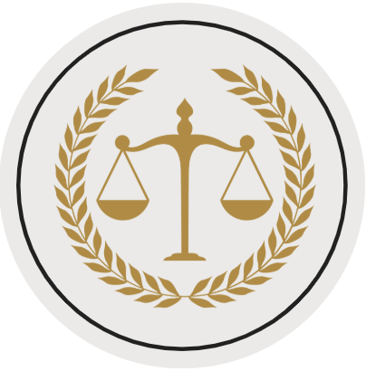

Conteúdo Técnico e Projetos Estruturantes
Normativos
Esta subpágina reúne os marcos legais basilares que orientam a atuação da Ouvidoria Nacional de Serviços Penais.
Base normativa da Ouvidoria
O acervo abaixo consolida leis, decretos e portarias de referência para participação social, transparência pública, proteção ao denunciante, acesso à informação e proteção de dados pessoais no âmbito das ouvidorias.
| Título | Tipo | Descrição |
|---|---|---|
| Lei nº 12.527, de 18 de novembro de 2011 | Arquivo | Regula o acesso a informações previsto no inciso XXXIII do art. 5º, no inciso II do § 3º do art. 37 e no § 2º do art. 216 da Constituição Federal. |
| Lei nº 13.460, de 26 de junho de 2017 | Arquivo | Dispõe sobre participação, proteção e defesa dos direitos do usuário dos serviços públicos da administração pública. |
| Lei nº 13.709, de 14 de agosto de 2018 | Arquivo | Dispõe sobre a proteção de dados pessoais e altera a Lei nº 12.965, de 23 de abril de 2014 (Marco Civil da Internet). |
| Decreto nº 9.492, de 5 de setembro de 2018 | Arquivo | Regulamenta a Lei nº 13.460, de 26 de junho de 2017, institui o Sistema de Ouvidoria do Poder Executivo federal e altera o Decreto nº 8.910, de 22 de novembro de 2016. |
| Decreto nº 10.153, de 3 de dezembro de 2019 | Arquivo | Dispõe sobre as salvaguardas de proteção à identidade dos denunciantes de ilícitos e de irregularidades praticados contra a administração pública federal direta e indireta. |
| Portaria Normativa CGU nº 116, de 18 de março de 2024 | Arquivo | Estabelece orientações para o exercício das competências das unidades do Sistema de Ouvidoria do Poder Executivo Federal, instituído pelo Decreto nº 9.492, de 5 de setembro de 2018, no âmbito do Poder Executivo federal, e dá outras providências. |